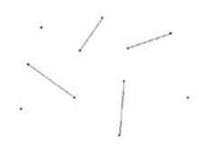

Problem C
Weird Fence
Input: Standard Input
Output: Standard Output
In the land of our great Sultan, the World Weird Fence (WWF) festival is going to take place again. For the festival, some poles are set up in a Cartesian plane. Each pole is colored in either red or blue color. You can connect two poles with a chain that consists of multi-colored rings thus creating a weird fence. Each pole has a single hook so you can not connect more than one chain to a pole. Now, though you have an unlimited supply of chains all having the same length, it’s important to note that each of the chains has a red ring at one end & a blue ring at the other end and you are only allowed to hook up a ring to a pole with same color. Also, it’s obvious that you can use a chain to connect two poles if & only if the chain’s length is greater than or equal to the linear distance of those two poles.

Given the co-ordinates of the poles & a positive integer k, write a program to find the minimum possible integer length for the chains so that at least k weird fences can be made. The fences may cross each other.
Input
The first line of the input file is the number of test cases N. This line will be followed by a blank line. N test cases follow. First line of each test case contains two positive integers P & k where P is the number of poles on the plane. (1<=P,k<=100). Each of the next P lines has two integers X & Y & the word “red” / “blue”. X & Y are the co-ordinates of the pole (-1000<=X,Y<=1000) & the word is the color of that pole. No two poles will be in the same location. There will be a blank line between test cases.
Output
For each test case output a single integer in a line which is the minimum integer length of the chains that is necessary to make at least k fences. If it is not possible to build k fences with the given constraints, print the word “Impossible” in a single line.
|
Sample Input |
Sample Output |
|
2 6 2 -3 5 blue -3 3 red 1 5 blue 2 0 red 4 6 blue 4 -1 red 6 4 -3 5 blue -3 3 red 1 5 blue 2 0 red 4 6 blue 4 -1 red |
6 Impossible |
Problemsetter: Mohammad Mahmudur Rahman
Special thanks To: Manzurur Rahman Khan